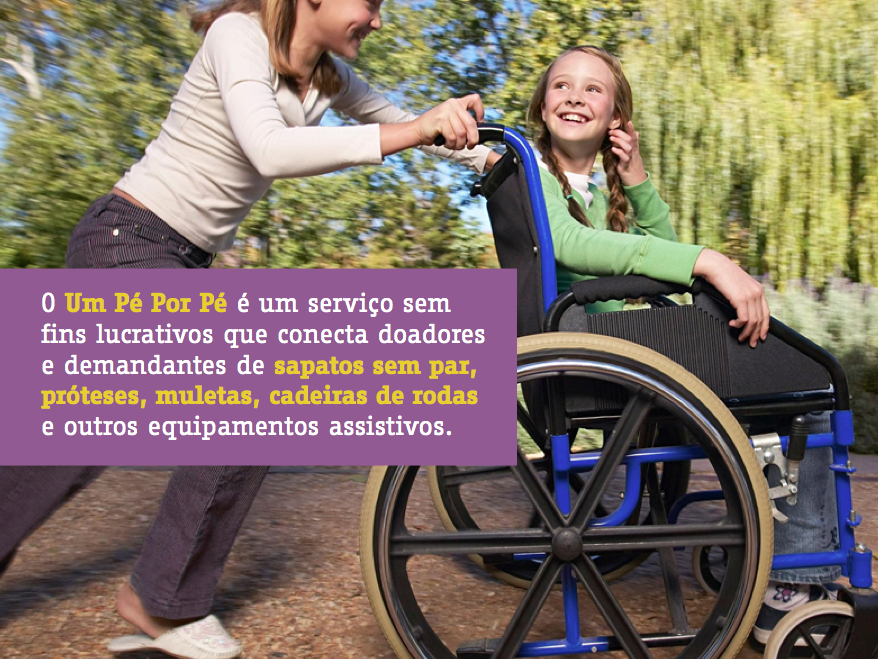
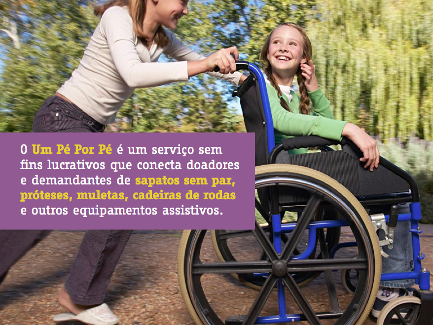
 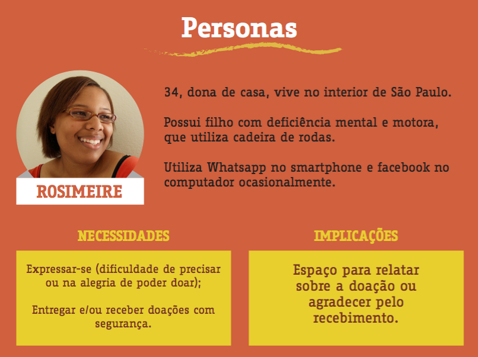
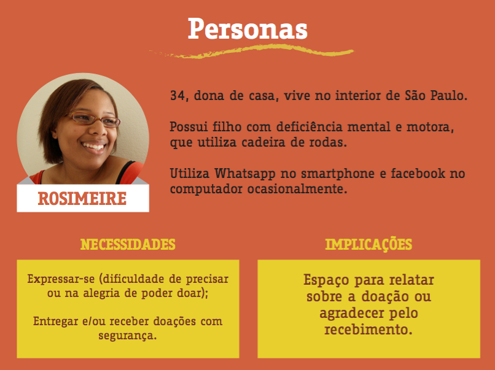
 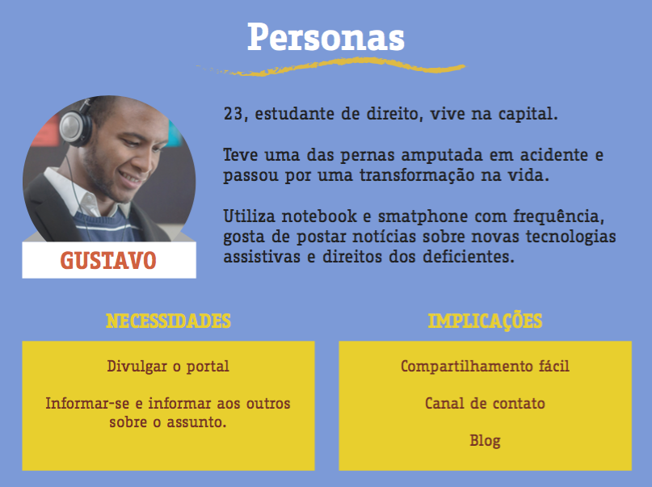
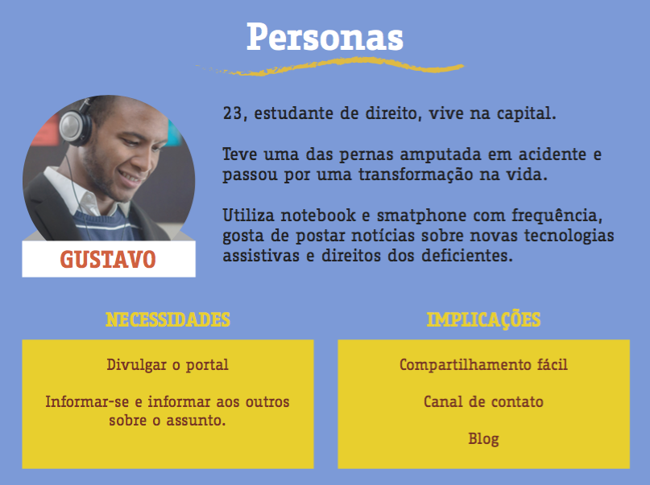
 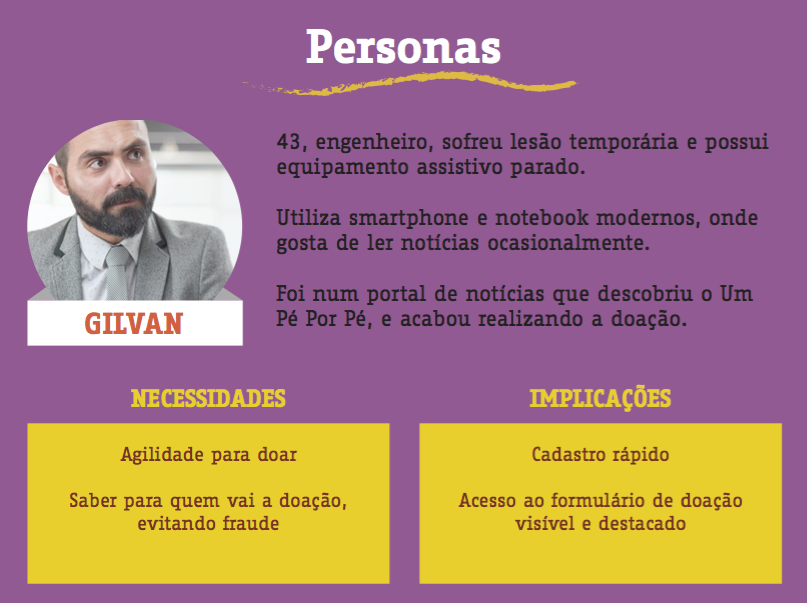
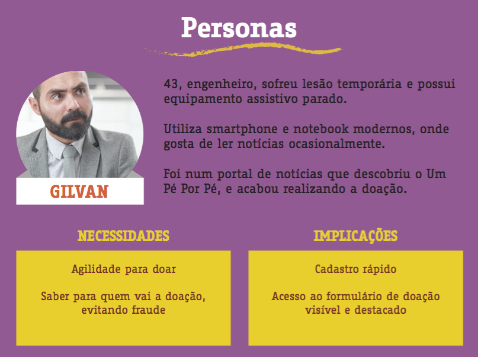
 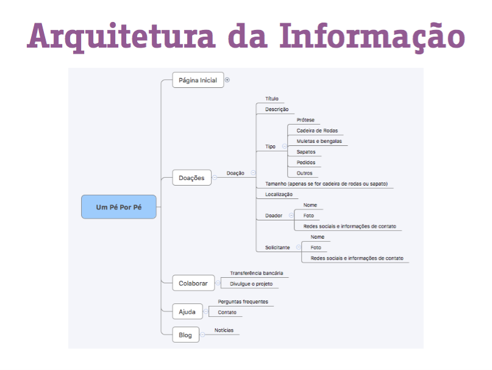
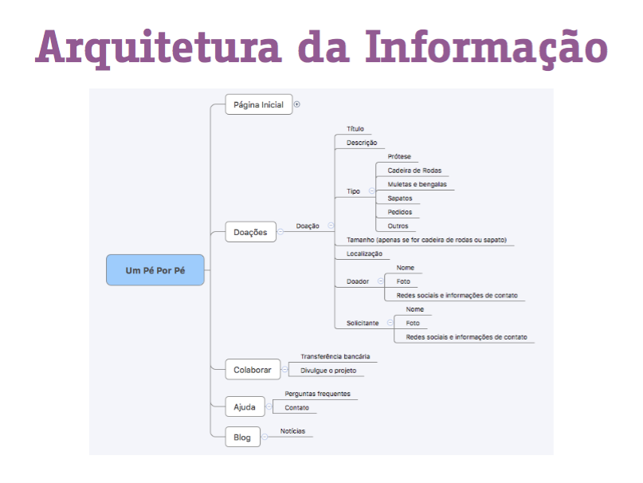
 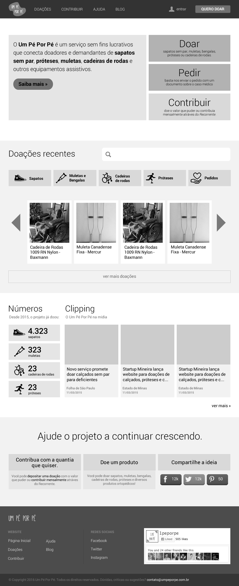
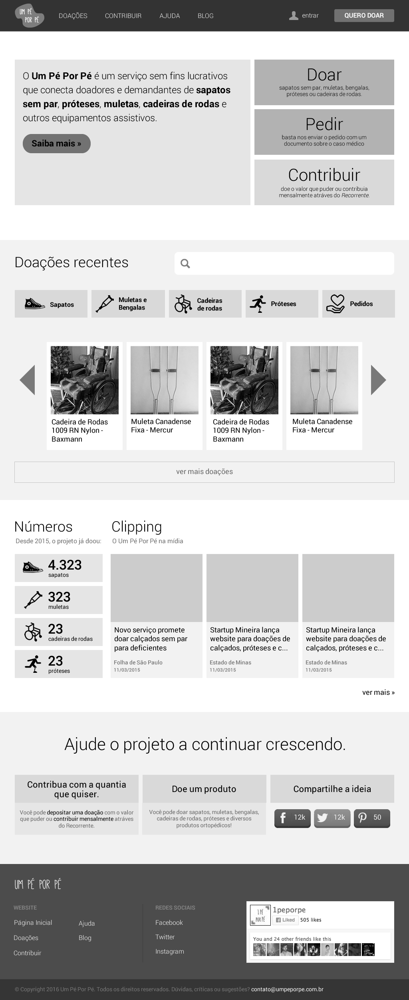
 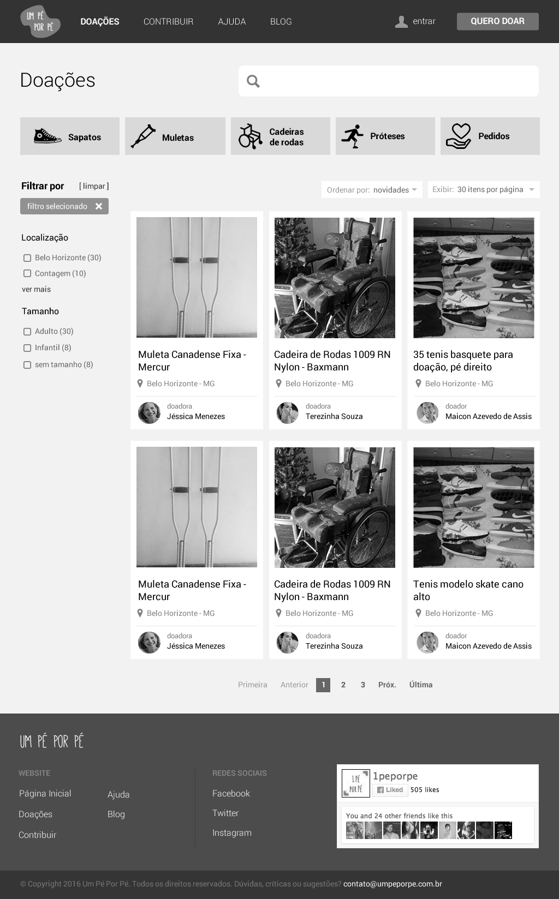
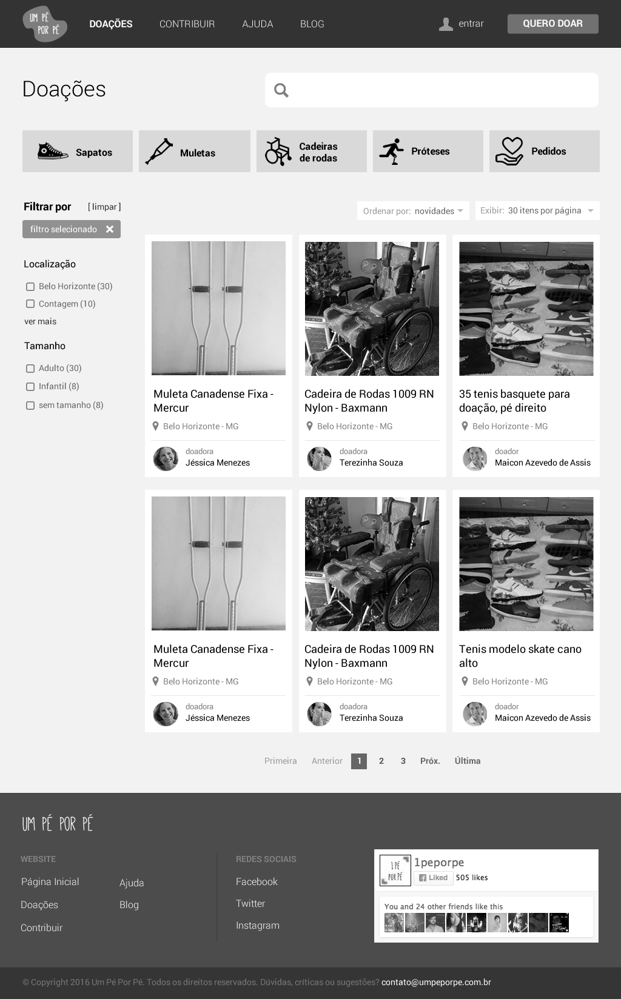
 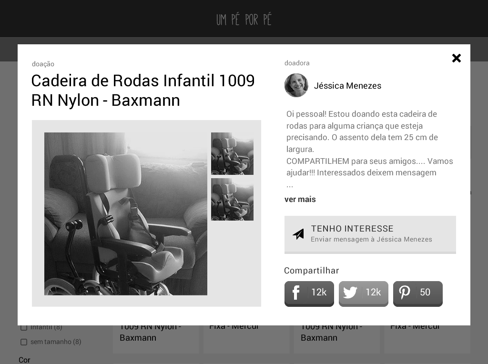
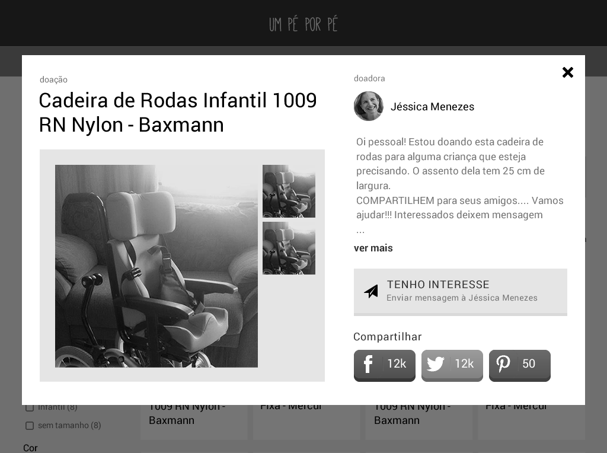
 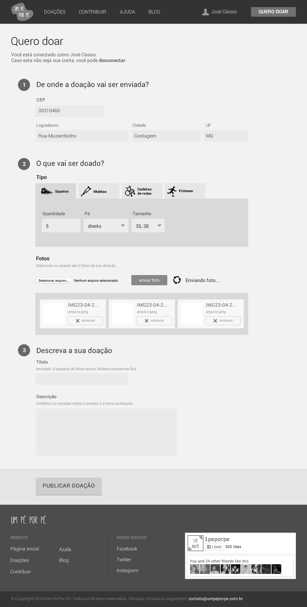
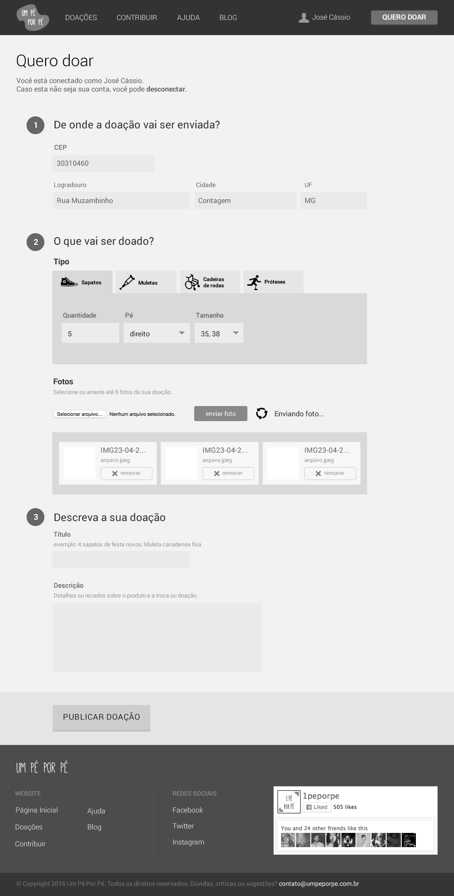
2016 Um Pé por Pé
- User research
- Personas
- Information architecture
- Prototyping
The Problem
Many disabled people have difficulties finding shoes or assistive equipments. Amputees, for instance, have to buy shoes in pairs even though they only need one. Poor people often have no budget to buy wheelchairs or crutches, and yet, there's a lot of people who need and can afford them for a temporary condition and then leave them in the basement when they are no longer needed.
Um Pé por Pé ("Foot by foot") is a nonprofit service that connects people in need to potential donors: they can get single shoes, prosthetics, crutches, wheelchairs and other assistive devices. Even though the project had a website, the equipment it offered weren't properly presented and the users resorted to only interacting through the project's facebook page.
The Solution
Through netnography - analysing recent posts in related communities and perceiving patterns, it was possible to map the profile of users and their needs, summing them up in personas, which guided me on the following steps.
The donation is the main entity of the system, it is the one that will be registered, searched for, requested, negotiated and sent/received by the people who interact with the system. Since the project's personas have low familiarity with technology and need efficiency on the donation register, I decided to use as little information as possible on the donations information architecture. If the donated item is a shoe, however, more categorization is necessary: the shoe size is decisive for the applicant's choice. Publications observed in the Netnography revealed that the size of the item is important in wheelchairs scenario too, being characterized as "adult" or "infant" sizes.
Moving to the prototypes, I prioritized the visibility of the most important actions, like donating. It is also interesting to note the donation photos on the prototypes: they are amateur, taken at home with smartphones cameras. Potential users of Um Pé Por Pé platform will likely send this kind of pictures.
The user research also revealed that single shoe donations are often made in large batches through a single picture showing all of them. Considering this, I used the field "quantity" and the possibility of informing different shoe sizes on the donation form.
By using user-centered design techniques, I presented an interface to serve as a subsidy for the platform production. This is a personal project I am developing with a friend (the project founder), but we haven’t yet developed its code and the functional platform. Through future works, we aim to encourage assistive equipments donation and exchange between people.